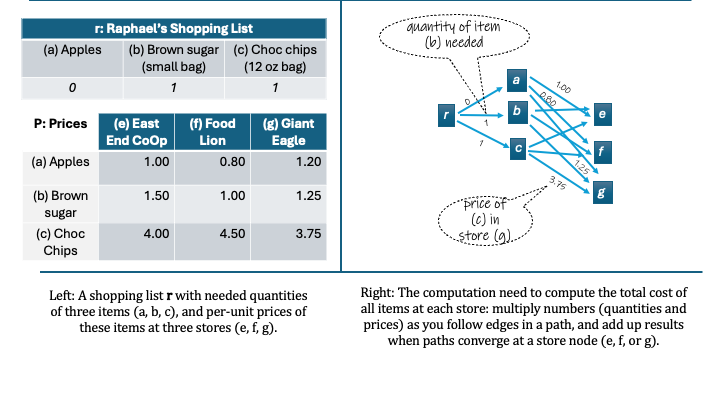

A gentle introduction to matrices
What are matrices and what do they do?
Multiplying rows and columns
If you're not familiar with matrices, they are simply a convenient and widely-used way of organizing lots of additionals and multiplications.
Here's a more down-to-earth example of when you might use matrices. Raphael needs get three items, which I'll abbreviate (a, b, c), in different quantities (0, 1, 1). These items are available at three different stores for different prices. Which store will be cheaper for Raphael to do his shopping?

This is an easy question to solve. Clearly the costs will be
- \( 1 \times $1.50 + 1 \times $4.00 = $5.50 \) at the East End Co-op
- \( 1 \times $1.00 + 1 \times $4.50 = $5.50 \) at the Food Lion
- \( 1 \times $1.25 + 1 \times $3.75 = $5.00 \) at the Giant Eagle
Notice this is same kind of computation we did in Figure 1.1. Matrices are just a compact way of describing this particular sequence of multiplications and additions---much more compact than the graphs I used.
With matrix algebra we start out by writing all the relevant numbers in tables, which are called matrices. In this case we need two matrices: $$ \textbf{r} = \left[ 0, ~ 1, ~ 1 \right], ~~~ \textbf{P} = \left[ \begin{array}{rr}1.00 & 0.80 \\ 1.50 & 1.00 \\ 4.00 & 4.50 \end{array} \right] $$ If a matrix has just one row, like the one I labeled r above, then it's called "row vector", and if it has just one column, it's called called a "column vector". We usually use boldfaced lower-case letters for matrices that are vectors and boldfaced upper-case letters otherwise.
To explain the general rule we'll use when multiplying a row vector by a matrix, I'll give these numbers names so we can follow the operations we need to do easily. I will use \( r_a \) for the number of apples Raphael needs, use use \( p_{a, e} \) for the price of apples at Giant Eagle'sand so on. So then $$ \textbf{r} = \left[ 0, ~ 1, ~ 1 \right] = \left[ r_a, ~ r_b, ~ r_c, \right] ~~~~ \textbf{P} = \left[ \begin{array}{rrr} 1.00 & 0.80 & 1.20 \\ 1.50 & 1.00 & 1.25 \\ 4.00 & 4.50 & 3.75 \end{array} \right] = \left[ \begin{array}{rrr} p_{a,e} & p_{a,f} & p_{a,g} \\ p_{b,e} & p_{b,f} & p_{b,g} \\ p_{c,e} & p_{c,f} & p_{c,g} \end{array} \right] $$ To matrix multiply \( \textbf{r} \) by \( \textbf{P} \), we align the numbers in \( \textbf{r} \) with the first column of \( \textbf{P} \), apples to apples, brown sugar to brown sugar, and so on. We multiply each of these pairs, and then add up the products to get a total $$ t_e = r_a p_{a,e} + r_b p_{b,e} + r_c p_{c,e} $$ Then we repeat this to get the corresponding sum for all the columns of \( \textbf{P} \), to get \( t_f \) and \( t_g \). The resulting matrix product of total costs \( \textbf{T} = \textbf{r} \textbf{P} \) is finally $$ \textbf{T} = \left[ t_e, ~ t_f, ~ t_g \right] = \left[ r_a p_{a,e} + r_b p_{b,e} + r_c p_{c,e}, ~ r_a p_{a,f} + r_b p_{b,f} + r_c p_{c,f}, ~ r_a p_{a,g} + r_b p_{b,g} + r_c p_{c,g} \right] $$
Here is another way of describing this computation. Let's write the columns of \( \textbf{P} \) as follows:
- Column for store \( e \) is written \( \textbf{P}[:,e] \)
- Column for store \( f \) is written \( \textbf{P}[:,f] \)
- Column for store \( g \) is written \( \textbf{P}[:,g] \)